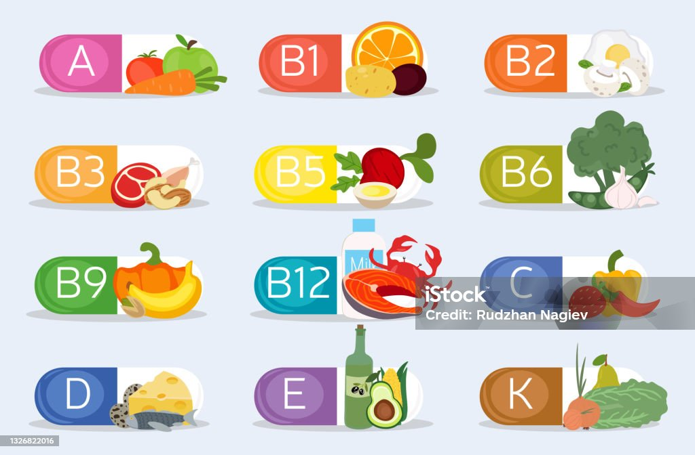

Las vitaminas tienen una función reguladora, intervienen en las reacciones químicas celulares y son imprescindibles para el crecimiento y el buen funcionamiento del organismo. No actúan como fuente de energía.
Las cantidades que necesitamos de vitaminas son muy pequeñas, pero su ausencia o déficit en la alimentación provoca la aparición de enfermedades carenciales.
Las vitaminas se alteran con la luz y el calor. Abundan en las frutas y las verduras frescas.
Dependiendo de su solubilidad, se pueden clasificar en:
- Vitaminas hidrosolubles: vitaminas del complejo B y vitamina C. se disuelven en agua
- Vitaminas liposolubles: vitaminas A, D, E y K. Se disuelven en grasas.
Respecto a las vitaminas hidrosolubles tenemos:
| Vitaminas hidrosolubles | Función | Fuente |
| Tiamina o B1 | Crecimiento | Cereales, alimentos de origen animal |
| Riboflavina o B2 | Crecimiento | Cereales |
| Niacina o B3 | Procesos enzimáticos | Carne, pescado |
| Piridoxina o B6 | Procesos enzimáticos | Carne, pescado |
| Ácido fólico o B9 | Metabolismo | Huevos |
| Vitamina C | Sistema inmunitario | Frutas y verduras |
| Vitaminas liposolubles | Función | Fuente |
| Vitamina A | Visión | Huevo, aceite oliva |
| Vitamina E | Antioxidante | Huevo |
| Vitamina K | Coagulación sanguínea | Verduras, aceites vegetales |
| Vitamina D | Crecimiento | Pescado, huevos |